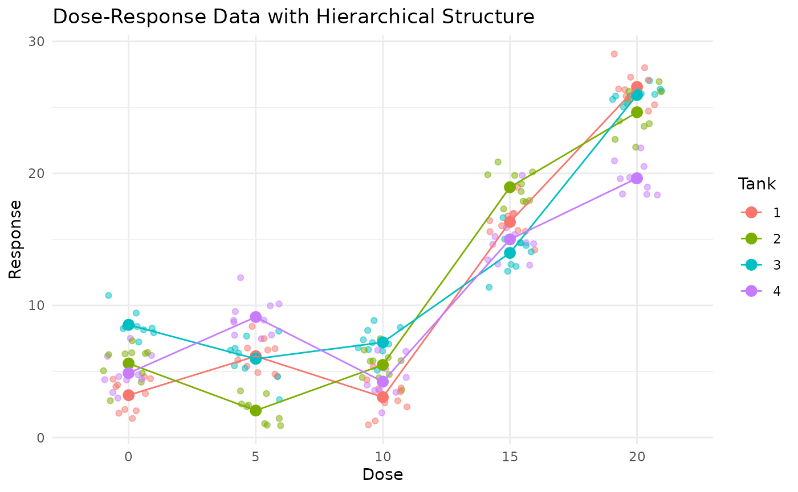

Variance Components
We first explore how variance components structure affect the dose-response analysis using the Intraclass Correlation Coefficient (ICC) patterns.
The ICC represents the proportion of total variance attributable to between-tank differences:
\[ \mbox{ICC} = \sigma^2_{between}/(\sigma^2_{between} + \sigma^2_{within}) \]
Example 1
# Let's simulate a single dataset with your existing function and examine its properties
set.seed(123)
# Simulate dose-response data with specific variance components
sim_data <- simulate_dose_response(
n_doses = 5,
dose_range = c(0, 20),
m_tanks = 4,
k_individuals = 10,
var_tank = 6, # Between-tank variance
var_individual = 2, # Within-tank (individual) variance
include_individuals = TRUE,
response_function = function(dose) {
# Simple linear dose-response with threshold at dose 10
ifelse(dose > 10, 5 + 2 * (dose - 10), 5)
}
)
# Calculate theoretical ICC
theoretical_icc <- 6 / (6 + 2) # var_tank / (var_tank + var_individual)
cat("Theoretical ICC:", theoretical_icc, "\n")
#> Theoretical ICC: 0.75
# Examine the data structure
head(sim_data)
#> Dose Tank Individual Response
#> 1 0 1 1 2.116990
#> 2 0 1 3 3.318858
#> 3 0 4 1 2.985193
#> 4 0 4 3 3.405375
#> 5 0 3 2 7.934101
#> 6 0 2 1 2.787365
str(sim_data)
#> 'data.frame': 200 obs. of 4 variables:
#> $ Dose : num 0 0 0 0 0 0 0 0 0 0 ...
#> $ Tank : int 1 1 4 4 3 2 2 1 1 4 ...
#> $ Individual: int 1 3 1 3 2 1 3 2 4 2 ...
#> $ Response : num 2.12 3.32 2.99 3.41 7.93 ...
# Visualize the data to see the hierarchical structure
library(ggplot2)
# Plot individual data points with tank means
ggplot(sim_data, aes(x = factor(Dose), y = Response, color = factor(Tank))) +
geom_jitter(width = 0.2, alpha = 0.5) +
stat_summary(fun = mean, geom = "point", size = 3) +
stat_summary(fun = mean, geom = "line", aes(group = factor(Tank))) +
labs(title = "Dose-Response Data with Hierarchical Structure",
x = "Dose", y = "Response",
color = "Tank") +
theme_minimal()
# Calculate observed ICC using a mixed model
library(lme4)
mixed_model <- lmer(Response ~ factor(Dose) + (1|Tank), data = sim_data)
summary(mixed_model)
#> Linear mixed model fit by REML ['lmerMod']
#> Formula: Response ~ factor(Dose) + (1 | Tank)
#> Data: sim_data
#>
#> REML criterion at convergence: 927.7
#>
#> Scaled residuals:
#> Min 1Q Median 3Q Max
#> -2.22011 -0.64124 0.04355 0.67388 2.79017
#>
#> Random effects:
#> Groups Name Variance Std.Dev.
#> Tank (Intercept) 0.424 0.6511
#> Residual 6.060 2.4617
#> Number of obs: 200, groups: Tank, 4
#>
#> Fixed effects:
#> Estimate Std. Error t value
#> (Intercept) 5.5526 0.5074 10.942
#> factor(Dose)5 0.2649 0.5505 0.481
#> factor(Dose)10 -0.5574 0.5505 -1.013
#> factor(Dose)15 10.5100 0.5505 19.093
#> factor(Dose)20 18.6356 0.5505 33.855
#>
#> Correlation of Fixed Effects:
#> (Intr) fc(D)5 f(D)10 f(D)15
#> factor(Ds)5 -0.542
#> factr(Ds)10 -0.542 0.500
#> factr(Ds)15 -0.542 0.500 0.500
#> factr(Ds)20 -0.542 0.500 0.500 0.500
# Extract variance components
vc <- VarCorr(mixed_model)
tank_var <- as.numeric(vc$Tank)
residual_var <- attr(vc, "sc")^2
observed_icc <- tank_var / (tank_var + residual_var)
cat("Observed ICC:", observed_icc, "\n")
#> Observed ICC: 0.06538746
# Aggregate data to tank level
tank_data <- aggregate(Response ~ Dose + Tank, data = sim_data, FUN = mean)
head(tank_data)
#> Dose Tank Response
#> 1 0 1 3.202260
#> 2 5 1 6.156191
#> 3 10 1 3.054297
#> 4 15 1 16.318684
#> 5 20 1 26.548488
#> 6 0 2 5.604946
# Compare individual-level model with tank-level model
# Individual level (mixed model)
ind_model <- lmer(Response ~ factor(Dose) + (1|Tank), data = sim_data)
# Tank level (regular linear model)
tank_model <- lm(Response ~ factor(Dose), data = tank_data)
# Compare model summaries
summary(ind_model)
#> Linear mixed model fit by REML ['lmerMod']
#> Formula: Response ~ factor(Dose) + (1 | Tank)
#> Data: sim_data
#>
#> REML criterion at convergence: 927.7
#>
#> Scaled residuals:
#> Min 1Q Median 3Q Max
#> -2.22011 -0.64124 0.04355 0.67388 2.79017
#>
#> Random effects:
#> Groups Name Variance Std.Dev.
#> Tank (Intercept) 0.424 0.6511
#> Residual 6.060 2.4617
#> Number of obs: 200, groups: Tank, 4
#>
#> Fixed effects:
#> Estimate Std. Error t value
#> (Intercept) 5.5526 0.5074 10.942
#> factor(Dose)5 0.2649 0.5505 0.481
#> factor(Dose)10 -0.5574 0.5505 -1.013
#> factor(Dose)15 10.5100 0.5505 19.093
#> factor(Dose)20 18.6356 0.5505 33.855
#>
#> Correlation of Fixed Effects:
#> (Intr) fc(D)5 f(D)10 f(D)15
#> factor(Ds)5 -0.542
#> factr(Ds)10 -0.542 0.500
#> factr(Ds)15 -0.542 0.500 0.500
#> factr(Ds)20 -0.542 0.500 0.500 0.500
summary(tank_model)
#>
#> Call:
#> lm(formula = Response ~ factor(Dose), data = tank_data)
#>
#> Residuals:
#> Min 1Q Median 3Q Max
#> -4.5543 -1.2816 0.1967 1.8654 3.3025
#>
#> Coefficients:
#> Estimate Std. Error t value Pr(>|t|)
#> (Intercept) 5.5526 1.2460 4.456 0.000462 ***
#> factor(Dose)5 0.2649 1.7621 0.150 0.882520
#> factor(Dose)10 -0.5574 1.7621 -0.316 0.756118
#> factor(Dose)15 10.5100 1.7621 5.964 2.59e-05 ***
#> factor(Dose)20 18.6356 1.7621 10.576 2.38e-08 ***
#> ---
#> Signif. codes: 0 '***' 0.001 '**' 0.01 '*' 0.05 '.' 0.1 ' ' 1
#>
#> Residual standard error: 2.492 on 15 degrees of freedom
#> Multiple R-squared: 0.9261, Adjusted R-squared: 0.9063
#> F-statistic: 46.96 on 4 and 15 DF, p-value: 2.613e-08
# Extract and compare fixed effects
ind_fixed <- fixef(ind_model)
tank_fixed <- coef(tank_model)
cbind(ind_fixed,tank_fixed)
#> ind_fixed tank_fixed
#> (Intercept) 5.5525654 5.5525654
#> factor(Dose)5 0.2648670 0.2648670
#> factor(Dose)10 -0.5573896 -0.5573896
#> factor(Dose)15 10.5099513 10.5099513
#> factor(Dose)20 18.6355902 18.6355902Example 2
Simualate a dose-response with unequal variances across the dose range.
# Example with increasing variance by dose
increasing_var_tank <- c(1, 2, 4, 8, 50)
increasing_var_individual <- c(0.5, 1, 1.5, 2, 2.5)
# Simulate data with inhomogeneous variance
sim_data_inhomogeneous <- simulate_dose_response(
n_doses = 5,
dose_range = c(0, 20),
m_tanks = 3,
k_individuals = 10,
var_tank = increasing_var_tank,
var_individual = increasing_var_individual,
include_individuals = TRUE
)
prelimPlot3(sim_data_inhomogeneous%>% group_by(Dose,Tank)%>%summarise(Response=mean(Response),.groups = "drop"))Expected Patterns in ICC and P-values Based on Variance Structures
Intraclass Correlation Coefficient (ICC) Patterns
The ICC represents the proportion of total variance attributable to between-tank differences:
\[ \mbox{ICC} = \sigma^2_{between}/(\sigma^2_{between} + \sigma^2_{within}) \]
Where: - \(\sigma^2_{between}\) is the between-tank variance (var_tank) - \(\sigma^2_{within}\) is the within-tank variance (var_individual)
Expected ICC Patterns:
-
High between-tank variance, low within-tank
variance:
- ICC approaches 1.0
- Indicates strong tank effects where individuals within the same tank are highly similar
- Example: var_tank = 10, var_individual = 1 \(\rightarrow\) ICC \(\approx\) 0.91
-
Low between-tank variance, high within-tank
variance:
- ICC approaches 0
- Indicates weak tank effects where individuals within the same tank vary substantially
- Example: var_tank = 1, var_individual = 10 \(\rightarrow\) ICC \(\approx\) 0.09
-
Equal between-tank and within-tank variance:
- ICC = 0.5
- Balanced contribution of tank and individual effects
- Example: var_tank = 4, var_individual = 4 \(\rightarrow\) ICC = 0.5
P-value Patterns in Relation to Variance Structure
Individual-Level Mixed Model vs. Tank-Level Aggregated Model:
-
High ICC Scenarios (strong tank effects):
- Tank-level model: Will perform nearly as well as the individual-level model
- Individual-level model: Gains little additional power from individual observations
- P-value comparison: Both models will produce similar p-values
- Efficiency: Tank-level analysis is more efficient computationally with minimal loss of statistical power
-
Low ICC Scenarios (weak tank effects):
- Tank-level model: Loses substantial information by aggregating highly variable individuals
- Individual-level model: Gains significant power from modeling individual observations
- P-value comparison: Individual-level model will typically produce lower p-values (higher power)
- Efficiency: Individual-level analysis is worth the computational cost due to increased power
-
Moderate ICC Scenarios:
- Trade-off zone: Balance between computational efficiency and statistical power
- P-value comparison: Individual-level model generally produces lower p-values, but the advantage diminishes as ICC increases
Effect of Variance Components on P-values:
-
Increasing between-tank variance (var_tank):
- Increases overall variability in the data
- Decreases statistical power for detecting dose effects
- Increases p-values in both models
- Makes tank-level aggregation more reasonable (higher ICC)
-
Increasing within-tank variance (var_individual):
- Increases variability at the individual level
- Decreases ICC
- Makes individual-level modeling more advantageous
- Tank-level model p-values will increase more dramatically than individual-level model p-values
-
Interaction with dose effect size:
- For small effect sizes: Variance structure has a more pronounced impact on p-values
- For large effect sizes: Both models may detect significant effects despite variance structure differences
Practical Implications
-
When to use tank-level analysis:
- High ICC scenarios (ICC > 0.7)
- When computational efficiency is a concern
- When the experimental design focuses on tank-level responses
-
When to use individual-level analysis:
- Low to moderate ICC scenarios (ICC < 0.7)
- When maximum statistical power is required
- When individual-level covariates are important
-
Variance heterogeneity across dose levels:
- If variance increases with dose, individual-level models with appropriate variance structures become more important
- Tank-level models may be less robust to variance heterogeneity
By systematically exploring these patterns through simulation, we can develop guidelines for choosing the appropriate analysis approach based on the specific variance structure in dose-response studies.
Development Notes
For multiple comparison using multcomp, there are several ways to code it in functions:
- using
do.call
# Create a list for the mcp call
mcp_list <- list("Dunnett")
names(mcp_list) <- dose_var
# Set control level if not the first level
if (control_level != levels(data[[dose_var]])[1]) {
control_idx <- which(levels(data[[dose_var]]) == as.character(control_level))
mcp_list$base <- control_idx
}
dunnett_result <- multcomp::glht(model, linfct = do.call(multcomp::mcp, mcp_list))- using ``
# Create the mcp call as a string and then evaluate it
mcp_call_str <- paste0("mcp(", dose_var, " = 'Dunnett')")
if (control_level != levels(data[[dose_var]])[1]) {
mcp_call_str <- paste0("mcp(", dose_var, " = 'Dunnett', base = ", control_idx, ")")
}
# Create the glht call as a string and then evaluate it
glht_call_str <- paste0("glht(model, linfct = ", mcp_call_str, ")")
# Evaluate the call, not sure if we need to add , envir = eval_env to the eval function.
dunnett_result <- try(eval(parse(text = glht_call_str)), silent = TRUE)- Define the contrast matrix
K, seedrcHelper::dunnet_testfor examples.